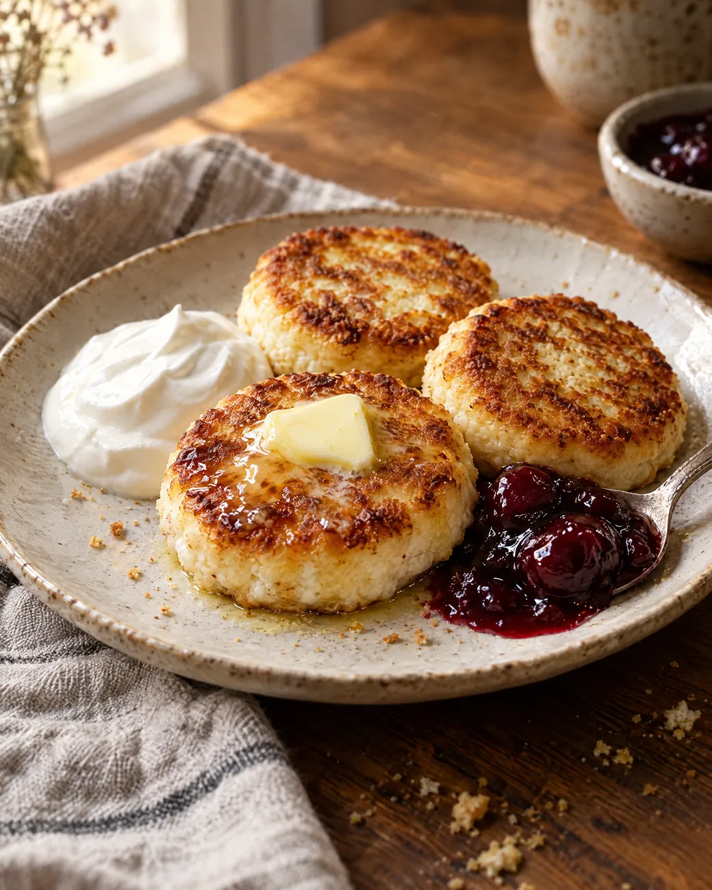
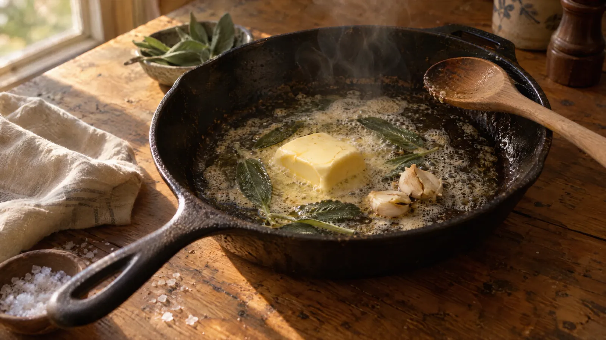
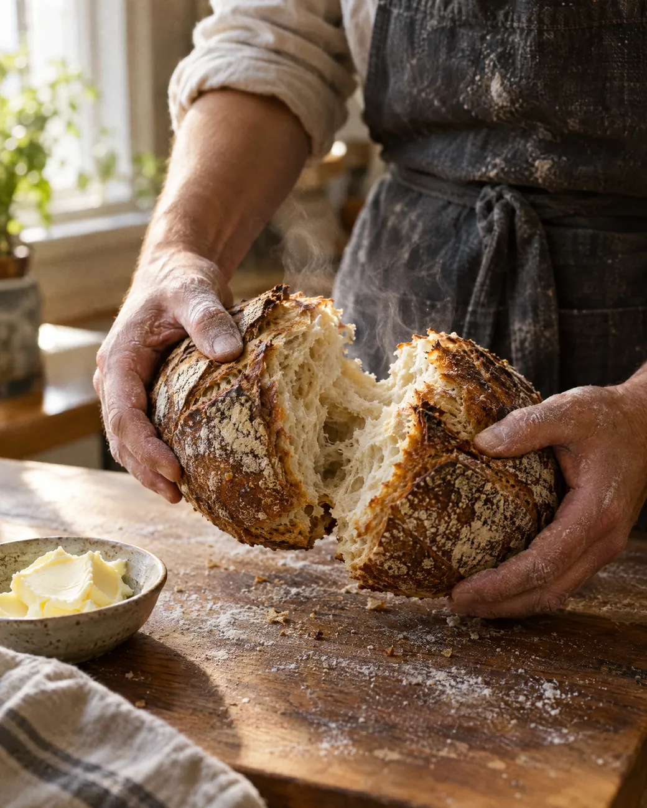
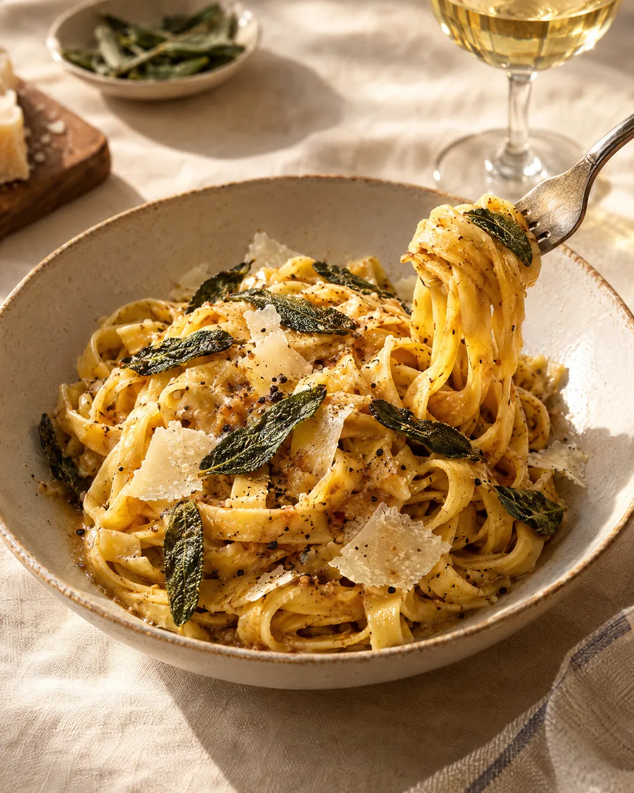
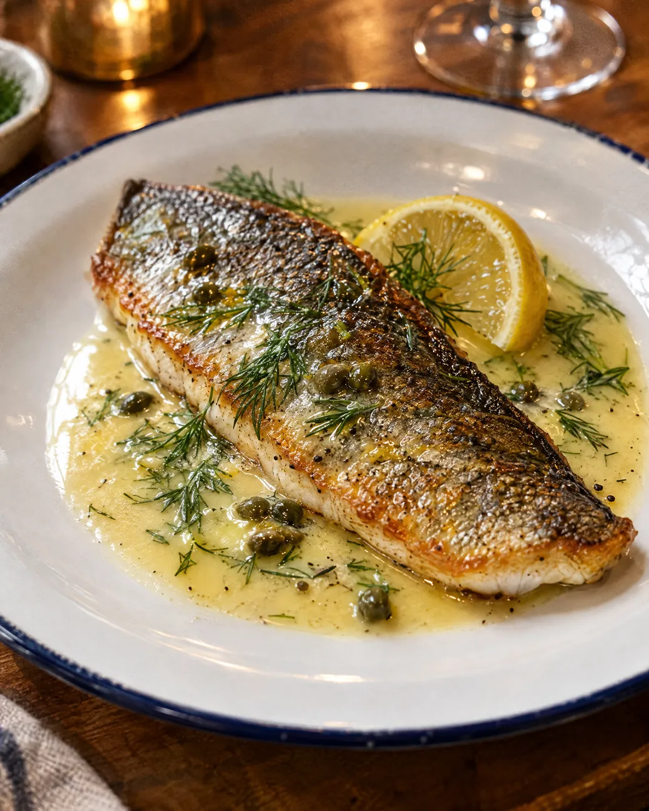
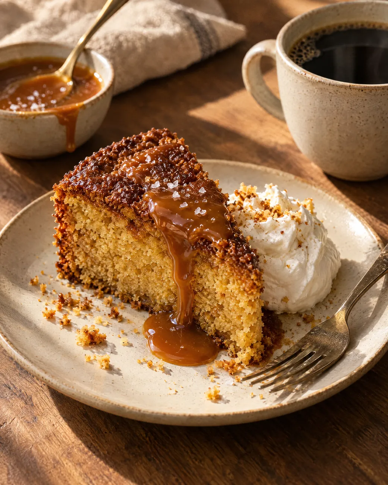
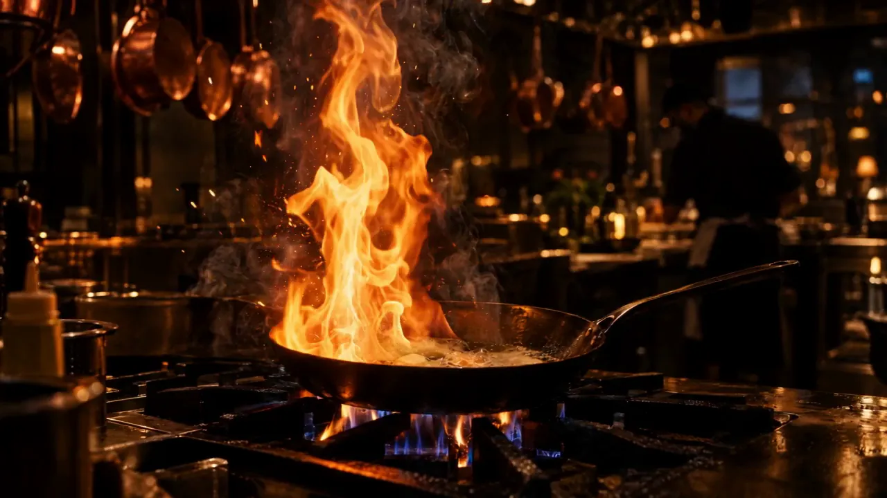

Завтрак весь день
Сырники на топлёном
Пышные внутри, румяные снаружи. Сметана, варенье из чёрной смородины и кусочек масла сверху, чтобы таял.
420 ₽Завтраки

Сначала кусок сливочного.
Потом жар и шалфей.
И вот ваша тарелка.

На масле вкуснее
Сливочное для корочки, оливковое для овощей, топлёное для сырников. С хорошим маслом даже простое блюдо хочется заказать ещё раз.
Меню одно на все четыре точки и меняется с сезоном. Кухня открытая, и видно, кто готовит ваш ужин. Порции щедрые, хлеб свой, утром пахнет корицей.
Как всё начиналось масла не жалеемСборка тарелки
Греем заранее, чтобы пюре не остыло по пути к столу.
Картофель, молоко и много масла. Взбиваем руками, без миксера.
Жарим кожей вниз на чугуне, пока не захрустит. Потом поливаем маслом с чесноком.
Хиты

Пышные внутри, румяные снаружи. Сметана, варенье из чёрной смородины и кусочек масла сверху, чтобы таял.

Свежие тальятелле, коричневое масло с шалфеем, твёрдый сыр. Четыре ингредиента, лишних нет.

Кожа хрустит, мясо тает. Соус из масла, лимона и укропа. Его собирают хлебом до последней капли.

Печём каждое утро и подаём тёплым, со взбитыми сливками.

Открытая кухня
Огонь видно из зала. Нам нечего прятать, кроме рецепта соуса.Данила, шеф
Точки
Заходите в ближайшую. Сырники везде одинаково пышные.
Оставьте имя и телефон, перезвоним за десять минут. По пятницам лучше заранее.
Забронировать стол